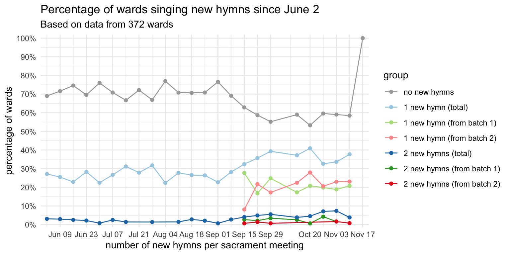

| Number of wards I have data from, by week | |
| Since September 15th | |
| date | wards |
|---|---|
| September 15 | 136 |
The Second Batch of New Hymns!
general
frequency
new hymns
On September 12th, the church released the second batch of new hymns. In a previous post, I covered in detail as much as I could about the first batch of hymns and how they rolled out between June 2 and September 8th. This page covers period between when the second batch came out and when the third batch will come out, whenever that will be and will update regularly as I collect more data. Currently I have data from 136 sacrament meetings since September 15th from 317 wards.
But first, here’s how much data I have for each week, just so you have an idea of what I’m working with. For now, there’s just one week, but this table will grow longer as time passes.
How many wards sang new hymns each week?
It’s been one week, so we don’t have a lot of information yet. For now, the plot is going to be a little hard to read, but once a few weeks have passed we’ll see more lines which will give us more information. This plot includes all the data since June 2nd when the first batch came out so we can get some context. I’ve color coded it by batch: green is for the first batch, red/pink is for the second, and blue is for both combined. This division is only relevant since September 15th when the second batch came out so prior to then, only the blue lines are used. In all cases, a lighter color indicates wards that sang exactly one new hymn while a darker color is for wards that since two or more in a single meeting.

As we saw with the first batch, the reception was very warm. Pretty consistently over the 15 weeks after the first batch of hymns was released, we saw about 30% of wards singing at least one of the new ones, with a small percentage singing two or more. But, if you look to the far right of the plot, towards the bottom, you’ll see some additional dots. The green ones represent the number of wards singing hymns from the first batch (#1001–1009), with the lighter color for just one and the darker color for two in a meeting. As you can see, the numbers are comparable to where they’ve been over the past couple months. The red/pink dots represent the second batch of hymns. As you can see, they are quite low. From the data I have, only about 7% of wards sang any of the new hymns this week. This is about a quarter as many wards as what we saw with the first batch. So, overall, a very lukewarm reception.
What hymns are most popular?
With only one week of data and relatively few people singing from the second batch, it’s hard to make any assertive claims about the popularity of the hymns within this batch. Nevertheless, we can look at the results for now just for curiosity. The table below shows how many wards sang each of the newest hymns.
| Approximate percentage of wards new hymns have been sung in | |
| Since September 15 | |
| Hymn | percent of wards |
|---|---|
| Amazing Grace (1010) | 3.9% |
| My Shepherd Will Supply My Need (1014) | 1.7% |
| Holding Hands Around the World (1011) | 0.6% |
| This Is the Christ (1017) | 0.6% |
| Anytime, Anywhere (1012) | 0% |
| God's Gracious Love (1013) | 0% |
| Oh, the Deep, Deep Love of Jesus (1015) | 0% |
| Behold the Wounds in Jesus' Hands (1016) | 0% |
| Come, Lord Jesus (1018) | 0% |
So, perhaps unsurprisingly,
(For a complete version of this table that includes all hymns, see here.)
When during meetings are these hymns sung?
We can see when these hymns tend to be sung and get an overall look at the popularity of the first batch of hymns. Again, it’s based on so little data, so take these reaults with a grain of salt. Notably though, none of the newest ones were sung as a sacrament hymn yet.
| When were new hymns sung in sacrament meeting? | |||
| Since September 15 | |||
| New Hymn | Opening | Intermediate | Closing |
|---|---|---|---|
| Amazing Grace (1010) | 57% | 14% | 29% |
| Holding Hands Around the World (1011) | 0% | 0% | 100% |
| My Shepherd Will Supply My Need (1014) | 0% | 33% | 67% |
| This Is the Christ (1017) | 0% | 100% | 0% |
Conclusion
So, there’s not a lot of data to go off of, and I think that in and of itself is notable. People didn’t seen as eager to incorporate this second batch of hymns into their sacrament meetings right away. I suspect as the weeks pass, we’ll see more and more being used as music coordinators begin to plan future meetings.
It may be the case that wards had their hymns planned already and they’ll wait until the next week or a few weeks from now before incorporating this second batch. It may also be because church musicians need time to prepare. However, the same reasons applied to the first batch and far more people sang new hymns in June 2. So, my guess is that the novelty of singing new hymns has waned a little bit, and there’s less of a rush to burn through all of them as there might have been over the summer.